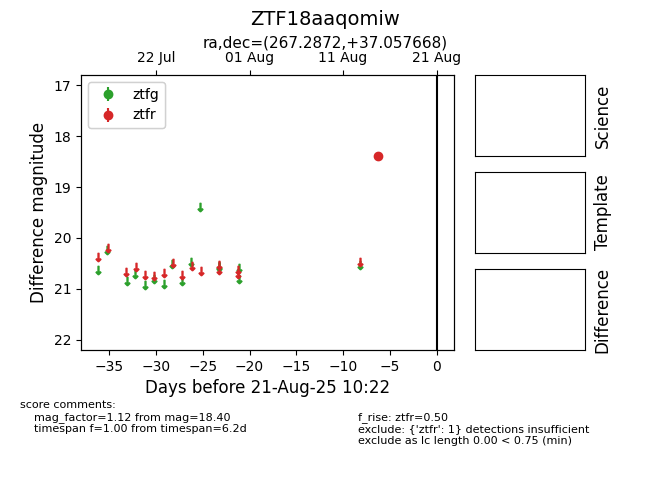

Target ZTF18aaqomiw at 2025-08-21 10:22, see:
FINK: fink-portal.org/ZTF18aaqomiw
Lasair: lasair-ztf.lsst.ac.uk/objects/ZTF18aaqomiw
ALeRCE: alerce.online/object/ZTF18aaqomiw
alt names
ZTF18aaqomiw (ztf,alerce)
coordinates:
equatorial (ra, dec) = (267.2872,+37.05767)
galactic (l, b) = (62.6407,+27.73938)
photometry
last ztfr=18.40
1 ztfr detections
